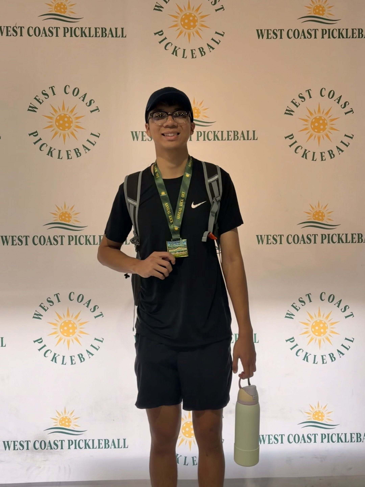

I am a Software Engineering graduate at UC Irvine who thrives at the crossroads of complex data and user focused design. I describe myself as a collaborative, analytical, and detail oriented developer. My work is driven by a passion for lifelong learning and a genuine satisfaction in solving problems—whether that's optimizing a complex SQL query or resolving a technical issue to help a user get back on track. I believe that great software isn't just about clean code; it's about building intuitive interfaces and robust infrastructure that helps people.
My interest in technology started with a desire to understand how the world works, which evolved into a career path combining software development and IT infrastructure. I enjoy the challenge of building user facing interfaces, but I also have a deep affinity for the "engine room" of any application: the database. Currently, I am deepening my expertise in MySQL and SQL database management, focusing on query optimization and script development, while simultaneously expanding my IT infrastructure knowledge through CompTIA A+ certification. This dual focus on software development and IT systems gives me a comprehensive understanding of the entire technology stack from the database to the interface to the hardware the system runs on.
When I'm not debugging or writing queries, you can usually find me on the pickleball court playing with friends or enjoying a game of Yu-Gi-Oh! I'm also a film enthusiast; one of my favorite hobbies is attending private, pre-release movie screenings as it's a great way to see the latest storytelling before anyone else.
I built this portfolio from scratch using vanilla HTML, CSS, and JavaScript. This project was a dedicated exercise in modular front-end architecture, focusing on creating a responsive, accessible, and performant user experience without relying on heavy frameworks. Tackling the CSS styling for this site was one of the most challenging and rewarding experiences.